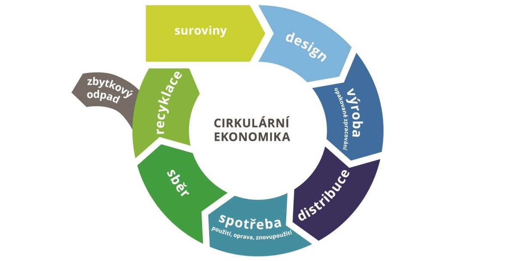

O Cirkulární ekonomice

Přihlásit se
Oběhové hospodářství (circular economy, CE) je
přirozený systém fungování přírodních a donedávna i antropogenních
systémů, na rozdíl od
aktuálního, lineárního způsobu hospodaření. CE
představuje nejnovější politiku EU zaměřenou na účinnější využívání
přírodních zdrojů na základě co nejdelšího uchování přidané hodnoty
produktů v ekonomickém systému při současném snižování objemu odpadu
a negativních dopadů na životní i sociální prostředí.
Projekt vznikl na základě definovaných potřeb obcí,
propojí problematiku CE s běžnou praxí obcí a tvorbou dlouhodobých
strategií na jejich úrovni. Zlepší podmínky pro obce dostupností
nejnovějších informací a metodik k zavádění CE, včetně aplikace v
rámci veřejných zakázek, a tvorbě dlouhodobého konsenzu v rámci
obce.
Řešený projekt si klade za
cíl definovat a ověřit kroky k přechodu obcí na CE,
a to v různých skupinách dle počtu obyvatel a dalších specifických
aspektů. Výsledkem projektu bude metodika a interaktivní webová
aplikace pro zástupce obcí a měst, která pomůže s řešením
konkrétních a běžných problémů v principu oběhového hospodářství – v
oblasti nakupování produktů a služeb, nakládání s odpady, dopravy,
údržby zeleně atd. Aplikace uživatele metodicky provede realizací
dlouhodobých konsenzů v obcích, principy oceněním jednotlivých
způsobů řešení a zapracováním potřeb do veřejných zakázek, resp.
dodavatelského řešení.
Součástí aplikace je sociální síť přístupná online, která podpoří
principy CE. Aplikace bude uživatelům plně přístupná po skončení projektu a
následně bude spravována aplikačním garantem.
Přihlásit se
Pohled Evropské Unie
na Cirkulární Ekonomiku
Přihlásit se
Při přechodu na oběhového hospodářství hrají klíčovou roli
hospodářské subjekty a spotřebitelé, zatímco úkolem orgánů státní
správy na místní, regionální i národní úrovni, stejně tak jako na
úrovni EU, je plnění podpůrné funkce, která spočívá zejména v
zavedení řádného regulačního rámce pro rozvoj oběhového hospodářství
na jednotném trhu, a následné komunikaci klíčových principů CE
směrem k podnikům i široké veřejnosti, a to zejména v oblasti
dalšího směřování prostřednictvím dlouhodobých cílů Akčního plánu EU
pro oběhové hospodářství a dalších opatření, která mají být
realizována do roku 2020 (Evropská komise 2015).
Na úrovni Evropské unie jsou v rámci tohoto akčního plánu nastavena
opatření, jejichž cílem je podpora investic a vytvoření rovných
podmínek, odstraní překážek plynoucích z evropských právních
předpisů nebo jejich nedostatečného prosazování, prohloubení
podmínek jednotného trhu a zajištění příznivých podmínek pro inovace
a zapojení všech zúčastněných stran (Evropská komise 2015).
Legislativní návrhy týkající se odpadu přijaté společně s Akčním
plánem pro oběhové hospodářství zahrnují dlouhodobé cíle na snížení
skládkování a posílení přípravy pro další využití a recyklaci
klíčových toků odpadu, od komunálního - zejména obalů-, až po odpady
ze stavebnictví. Tyto cíle by měly vést k tomu, aby členské státy
postupně používaly stejné osvědčené postupy a podporovaly potřebné
investice v oblasti nakládání s odpady (Evropská komise 2015).
Navržena je také řada dalších opatření, která mají vést k jasnějšímu
a jednoduššímu provádění, podporovat hospodářské pobídky a zlepšit
systémy rozšířené odpovědnosti výrobce.
Akční plán pro oběhové hospodářství dále představuje také modely a
postupy udržitelných činností v klíčových odvětvích hospodářství i
pro nové obchodní příležitosti, a to zejména s ohledem na potenciál
v oblasti růstu a zaměstnanosti (Evropská komise 2015). Závazkům a
opatřením uvedeným v tomto akčním plánu, které se týkají ekodesignu,
rozvoji strategických přístupů pro plasty a chemické látky,
financování inovačních projektů v rámci výzkumného programu Evropské
unie Horizont 2020 a dalších cílených opatření zaměřených na
prioritní oblasti zahrnující
plasty, plýtvání potravinami, kritické suroviny, stavební a
demoliční odpad, a biomasu a výrobky z biologického
materiálu, dále problematiku výroby a spotřeby či zadávání veřejných zakázek
a inovacím, bude věnována pozornost v následujících kapitolách.
Legislativní část přijetí principů oběhového hospodářství tak
spočívá aktuálně ve změnách směrnic v oblasti odpadů, obalů,
skládkování a výrobků s ukončenou životností, konkrétně směrnice o
odpadech, směrnice o skládkách, směrnice o obalech, směrnice o WEEE,
směrnice o bateriích a akumulátorech a směrnice o vozidlech s
ukončenou životností (MPO 2018). V současné době jsou také
připravovány legislativní návrhy týkající se hnojiv a opětovného
využívání vody (Evropská komise 2015).
Opatření navrhovaná v tomto akčním plánu na úrovni Evropské unie
podporují oběhové hospodářství v každé fázi hodnotového řetězce – od
výroby po spotřebu, opravy a repase, nakládání s odpady a druhotné
suroviny, které se vracejí zpět do hospodářství, vždy s ohledem na s
vysokou přidanou hodnotou takových opatření (Evropská komise 2015).
Hlavním předpokladem k tomu, aby se cirkulární ekonomika stala
nedílnou součástí našich životů, je dlouhodobé zapojení aktérů
napříč všemi úrovněmi vládnutí - jednotlivých členských států
Evropské unie, regionů, měst a municipalit, podniků i občanů. Jen
díky takovému přístupu je možné principy tohoto konceptu prosazovat
také na globální úrovni, jak už bylo popsáno v úvodu. Dalším
předpokladem pro úspěšné prosazování cílů uvedených v Akčním plánu
oběhového hospodářství je přirozeně jeho podpora ze strany členských
států Evropské unie a návazná národní opatření a legislativa, stejně
tak jako soudržnost politik v rámci těchto států, kdy je očekáván
vzájemně se posilující účinek plynoucí z provádění souhrnných
závazků přijatých Unií a členskými státy EU, zejména v rámci Agendy
pro udržitelný rozvoj 2030 organizace OSN (zejména ve vztahu k bodu
12 - zajistit udržitelné vzorce spotřeby a výroby) a plánu skupiny
G7 o účinném využívání zdrojů (Evropská komise 2015).
Přihlásit se
Cirkulární Ekonomika
a Česká Republika
 Přihlásit se
Přihlásit se
Prosazování principů cirkulární ekonomiky v České republice v návaznosti na Akční plán pro oběhové hospodářství prostřednictvím tzv. balíčku k oběhovému hospodářství, který byl schválen v květnu 2018 s transpoziční lhůtou dva roky, je na národní úrovni realizováno jak Ministerstvem průmyslu a obchodu (MPO), tak Ministerstvem životního prostředí (MŽP). Zatímco Ministerstvo průmyslu a obchodu nahlíží na přechod k oběhovému hospodářství zejména s ohledem na zajištění udržitelného růstu a posílení konkurenceschopnosti (nejen) České republiky cestou lepšího využívání zdrojů, snížení závislosti na primárních surovinách a vytvoření nových pracovních míst (MPO 2016) a věnuje se zejména odvětvím jako jsou plasty, potravinový odpad, kritické suroviny, příslušné problematice v oblasti stavebnictví a demolic nebo biomase a výrobkům z ní (MPO 2018), Ministerstvo životního prostředí se logicky zaměřuje na prosazování principů cirkulární ekonomiky jako na environmentálně šetrný způsob výroby, spotřeby a nakládání s odpady.
Za nejvýraznější aktivitu v přechodu na oběhové hospodářství lze aktuálně považovat přípravu dlouhodobé Strategie oběhového hospodářství České republiky Ministerstvem životního prostředí, která má být průřezem existujících českých politik z různých oblastí souvisejících s každodenními lidskými činnostmi, životním prostředím i výhledem rozvoje cirkulární ekonomiky do roku 2040 s názvem “Cirkulární Česko 2040”, a dále přípravu nového zákona o odpadech, vybraných výrobcích s ukončenou životností a obalech (MŽP 2018).
Jak už bylo popsáno, při prosazování principů oběhového hospodářství je zásadní role aktérů státní správy na všech úrovních, tedy i na regionální či lokální úrovni, stejně tak jako podniků a široké veřejnosti, kde je jedním z klíčových nástrojů šíření dobré praxe.
Přihlásit se
Principy Cirkulární ekonomiky
ve výrobě
Přihlásit se
Principy oběhového hospodářství je nezbytné respektovat už na samém počátku životního cyklu výrobku, protože fáze návrhu i výrobní postupy mají dopad na získávání zdrojů, jejich využívání a vznik odpadu po celou dobu životnosti výrobku. Klíčová je zejména životnost výrobků, kdy lze dosáhnout delší doby životnosti či udržení výrobku ve fázi užití pomocí vhodného designu. Promyšlený design může vést také ke snadnější opravitelnosti, modernizaci či repasi výrobků, a může pomoci subjektům provádějícím recyklaci při rozmontování výrobků za účelem opětovného použití hodnotných surovin a součástí, kdy přímo napomáhá šetřit primární (nejen vzácné) zdroje (Evropská komise 2015).
Ačkoliv je tato skutečnost dobře známa, nejsou v rámci trhu požadavky na vhodný design dostatečně reflektovány. Jedním z cílů Evropské unie je proto podle Akčního plánu pro oběhové hospodářství poskytování pobídek pro zlepšení designu výrobků prostřednictvím jejich inovací při zachování podmínek jednotného trhu a hospodářské soutěže (Evropská komise 2015).
S ohledem na vhodný ekodesign je pozornost věnována zejména elektrickým a elektronickým výrobkům, protože možnost jejich opravy je výhodná pro spotřebitele, kdy zároveň dojde k udržení snadno opravitelných výrobků déle ve fázi užití, a na konci jejich životnosti je klíčová jejich snadná recyklovatelnost, zvláště s ohledem na cenné materiály, které jsou v těchto výrobcích zpravidla obsaženy (např. prvky vzácných zemin v elektronických zařízeních). Některé z požadavků na ekodesign elektrických a elektronických výrobků jsou již řešeny v rámci směrnice o ekodesignu 2009/125/ES, která se vztahuje na všechny výrobky spojené se spotřebou energie, a jejímž cílem je zlepšit účinnost a environmentální výkonnost výrobků spojených se spotřebou energie a klást důraz na aspekty oběhového hospodářství (Směrnice o ekodesignu 2009/125/ES). Zatímco však požadavky na ekodesign byly zaměřeny převážně na energetickou účinnost těchto výrobků, v budoucnu budou ze strany Evropské unie systematicky prozkoumávány otázky, jako je právě opravitelnost, trvanlivost, možnosti zdokonalení, recyklovatelnost či vymezení některých materiálů nebo látek, které tyto výrobky obsahují. Podpora vhodného ekodesignu ze strany Evropské unie bude mimo jiné také zahrnovat stanovení výše finančního příspěvku, který hradí výrobci v rámci systémů rozšířené odpovědnosti výrobce, která bude stanovena na základě nákladů souvisejících s koncem životnosti jejich výrobků jako jeden z finančních nástrojů, jehož cílem je navrhování takových výrobků, které lze snadněji recyklovat nebo opětovně použít (Evropská komise 2015).
Stejně jako vhodný ekodesign jsou klíčové také výrobní postupy zachovávající principy oběhového hospodářství, protože neúčinné využívání jak primárních zdrojů, tak obnovitelných materiálů při výrobě vede ke ztrátě obchodních příležitostí a vzniku značného množství odpadu. Z pohledu výroby je klíčový globální pohled se zaměřením na environmentální i sociální aspekty výroby, protože značná část celosvětové produkce probíhá ve třetích zemích. Evropská unie proto podporuje udržitelné získávání surovin na globální úrovni, a to zejména prostřednictvím politického dialogu, partnerství a své obchodní a rozvojové politiky (Evropská komise 2015).
Zásadní roli v této oblasti přirozeně zastává průmysl, v oblasti využívání zdrojů, vzniku odpadu při výrobě a nakládání s ním však existují v jednotlivých průmyslových odvětvích značné rozdíly (Evropská komise 2015). S ohledem na principy cirkulární ekonomiky musí průmyslové podniky učinit konkrétní závazky v oblasti udržitelného získávání zdrojů a spolupráce v hodnotových řetězcích, Evropská unie proto bude intenzivně prosazovat osvědčené postupy při dosahování těchto cílů v celé řadě průmyslových odvětví prostřednictvím „referenčních dokumentů o nejlepších dostupných technikách“, které členské státy musí konzultovat při vydávání povolení pro průmyslová zařízení, a podporovat osvědčené postupy v oblasti odpadu z těžebního průmyslu, další podporou je např. vytvoření Evropského střediska excelence pro účinnost využívání zdrojů (Evropská komise 2014b).
Stranou podpory zavádění principů oběhového hospodářství při výrobních postupech ze strany Evropské unie nezůstávají ani malé a střední podniky, které mohou mimo jiné využívat obchodní příležitosti spojené s účinnějším využíváním zdrojů a dále podporu přístupu k inovativním technologiím či usnadnění procesu nahrazení nebezpečných chemických látek využívaných při výrobě (Evropská komise 2015).
Pro podniky, a to zejména pro malé a střední, by rovněž mohlo být přínosem zlepšení účinnosti a využívání systému Evropské unie pro environmentální řízení podniků a audit (EMAS) a pilotního projektu týkajícího se ověřování environmentálních technologií (ETV) (Evropská komise 2018), další možností je podpora inovativních průmyslových postupů jako je tzv. průmyslová symbióza, která umožňuje, aby odpad nebo vedlejší produkty jednoho odvětví mohly být použity jako vstupy pro jiné odvětví, kdy je základním předpokladem vyjasnění pravidel v oblasti jednotného výkladu pravidel pro využívání vedlejších produktů v členských státech Evropské unie (Evropská komise 2015).
Další možností optimalizace výrobních postupů ve vztahu k cirkulární ekonomice je podpora inovativních průmyslových postupů při opětovném využívání plynných odpadů a samozřejmě repase, které se běžně využívá v automobilovém průmyslu či u stavebních strojů, avšak v řadě průmyslových odvětví zatím není zažitou praxí (Evropská komise 2015).
Podpora těchto postupů ze strany Evropské unie jsou realizovány prostřednictvím programu pro financování výzkumu a inovací Horizont 2020 a prostřednictvím fondů politiky soudržnosti a dále zahrne pokyny týkající se osvědčených postupů v oblasti nakládání s odpady a účinného využívání zdrojů v průmyslových odvětvích do referenčních dokumentů o nejlepších dostupných technikách (Best available techniques Reference, BREF) a vydá pokyny a bude podporovat osvědčené postupy v oblasti odpadů z těžebního průmyslu (Evropská komise 2015).
Odpad zdrojem
Přihlásit se
Nahlížení na odpady jako na zdroj je klíčovým aspektem oběhového hospodářství, stejně tak jako právní vymezení skutečnosti, kdy je materiál odpadem, a kdy se stává druhotnou surovinou, pro zajištění rovných a jasných podmínek v rámci trhu s těmito materiály. Posílení trhu s druhotnými surovinami, stejně tak jako opětovné využívání vody, která je základní podmínkou pro udržení kvality našeho života tak, jak jej známe, je totiž nezbytnou podmínkou udržitelného rozvoje jak na lokální, tak na globální úrovni. S ohledem na surovinovou politiku je využívání druhotných surovin spojeno se zajištěním bezpečnosti dodávek potřebných materiálů, které mohou být obchodovány nebo přepravovány stejně jako primární suroviny z tradičních surovinových zdrojů, přesto využívání druhotných surovin představuje v současné době jen malou část materiálů, a jejich využívání čelí mnoha překážkám, zejména v oblasti jejich proměnlivé kvality a nehomogenity (Evropská komise 2015). Výjimkou je opakované využití železného šrotu a papíru, kde je míra recyklace vysoká (Evropská komise 2015).
Otázkami nejisté kvality druhotných surovin vhodných k dalšímu využití v mnoha průmyslových odvětvích se Evropská unie cíleně zabývá. Po nezbytných analýzách spojených s problémy jednotlivých druhů materiálů navrhne normy, které umožní posoudit stupně nečistot nebo vhodnost pro vysoce kvalitní recyklaci jednotlivých typů materiálů, jejichž zavedení má za cíl zejména zvýšit důvěru v druhotné suroviny a recykláty a posílit trh s těmito materiály (Evropská komise 2015).
Jednou ze zásadních surovin, pro které je třeba vypracovat výše popsané normy kvality a revidovat konkrétní opatření a podmínky opakovaného využití, je fosfor, který patří mezi kritické suroviny (Evropská komise 2017), a který je přítomen zejména v organickém odpadu. Udržitelné využívání organických odpadů v zemědělství přitom snižuje potřebu minerálních hnojiv, jejichž výroba má negativní dopad na životní prostředí a závislost na dovozu fosfátů.
Opětovné využívání vody, které bylo zmíněno již v úvodu této kapitoly, nabývá v posledních letech na významu s ohledem na sucho, jehož dopady zasahují negativně jak hospodářství, tak působí škody v oblasti životního prostředí. Kromě opatření ke zvýšení účinnosti využití vody např. v z dešťových srážek, představuje mimořádně cenný, avšak málo využívaný způsob zvyšování dodávek vody a zmírňování tlaku na nadměrné využívání vodních zdrojů opětovné využívání upravené odpadní vody v bezpečných a nákladově efektivních podmínkách v souladu s principy oběhového hospodářství (Evropská komise 2015). Využívání odpadních vod v zemědělství významně přispívá k recyklaci živin a má potenciál nahradit průmyslová hnojiva s benefity, které jsou popsány výše. Opětovné využívání upravené odpadní vody je proto v popředí zájmu Evropské unie, kdy budou připravena opatření na jeho podporu, a to včetně právních předpisů o minimálních požadavcích na tuto vodu (Evropská komise 2015).
Překážkou při využívání odpadních vod, ale i v případě dalších druhotných surovin, je potenciální přítomnost látek ohrožujících zdraví nebo životní prostředí, na které se vztahují omezení nebo zákazy plynoucí s evropské legislativy. Opatření na podporu rozvoje trhu s druhotnými surovinami je tak nezbytné sladit s příslušnou legislativou o chemických látkách, zejména s přihlédnutím k faktu, že do odpadních toků vstupují výrobky na konci svého životního cyklu, které prokazatelně obsahují nebezpečné chemické látky, avšak byly uvedeny na trh ještě v době, kdy žádná podobná omezení nebyla v platnosti (Evropská komise 2015). Protože odhalování i následné odstraňování těchto látek je nákladné a vytváří překážky zejména pro malé provozovatele recyklace, je nezbytné analyzovat a následně usnadnit sledovatelnost a řízení rizik chemických látek v procesu recyklace a materiálového využití při současném zachování vysoké úrovně ochrany lidského zdraví a životního prostředí (Evropská unie 2013).
V neposlední řadě je zcela klíčové, mít dostatek informací o materiálových tocích druhotných surovin, protože obecně lze říci, že detailní informace o přeshraničním pohybu druhotných surovin jak v rámci Evropské unie, tak v globálním měřítku, nejsou dostatečné (Smil 2017). Za tímto účelem bude Evropská unie rozvíjet informační systém o druhotných surovinách, který zlepší dostupnost údajů o jednotlivých materiálech (Evropská komise 2015).
Zatímco papír nebo kovy jsou poptávanou druhotnou surovinou, uplatnění pro jiné materiály hledá průmysl i soukromý sektor zatím obtížně, přesto se již řada hospodářských subjektů veřejně zavázala k zajištění určité úrovně obsahu recyklovaných materiálů ve výrobcích, které uvádí na trh, a to jak z důvodu udržitelnosti, tak z ekonomických důvodů (Evropská komise 2015). Takové jednání komerčních subjektů je při dosahování cílů s ohledem na principy oběhového hospodářství klíčové, obdobně jako poptávka po výrobcích z recyklovaných materiálů ze strany státní správy či samospráv prostřednictvím zadávání veřejných zakázek (Evropská komise 2015).
Přihlásit se